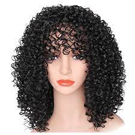
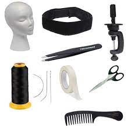
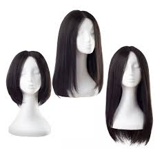
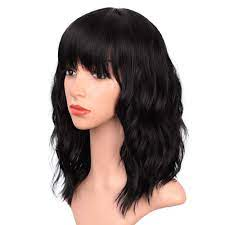
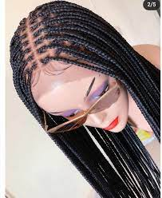
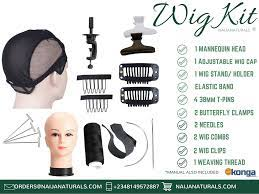
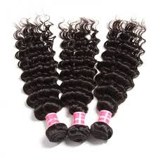
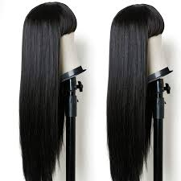

 
As part of the RGA Elective Program, we have decided to educate our girls on how to make one essential things of a woman's daily mission (aka dressing up) known as WIGS!! Wigs, are essential to many women due to their ability to give one a new look in about five seconds, and conceal whatever we want hidden(for reasons best known to us), right?. For this years edition of the wig making elective, we have two groups:weavons and attachment.

Weavons can be classified into human hair and extensions.This are manufactured head covering of real or artificial hair worn in the theatre,as personal adornment, disguise or symbol of office or for religious reasons. The wearing of weavons dates from the earliest recorded times;it is known,for example, that the ancient Egyptians shaved thier heads and wore wigs to protect themselves from the sun and that the Assyrians,Phonicians, Greeks and Romans also used artificial hairpieces at times.
Weavons can come in different styles,they can be curly,waves,Fringes,Straight weavons.

Attachment extensions are known to come from the black woman race but studies have found that hair extentions date back to around 3400 BC in Egypt.The hair weave was invented in 1951 by an African American woman named Christina Jerkins.
Attachment wigs come in different styles like:twisting ,braiding etc. Our students specialised mainly on Braiding .

The materials needed include:wig cap,wig band,needle, wig extensions etc.
This is a Wig Making video
A quote from a Wig Making student,Lady Juanita,"NO PAIN,NO GAIN". Students in this Elective include:Lady Juanita,Lady Doreen,Lady Jemimah,Lady Dumde,Lady Olivia etc.
Dont also forget you can dye your wigs after making them. Parents please patronize your childrens works...these wigs are to die for. Thank you!
This page was made by Lady Tamunosaki G.Princewill
HOME